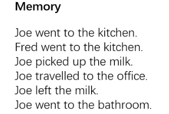
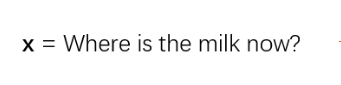
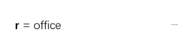
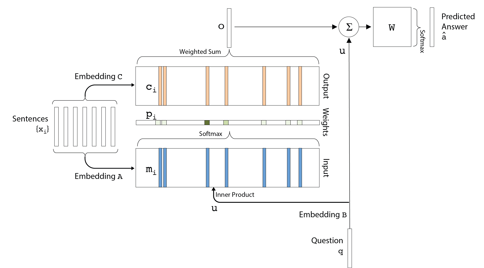
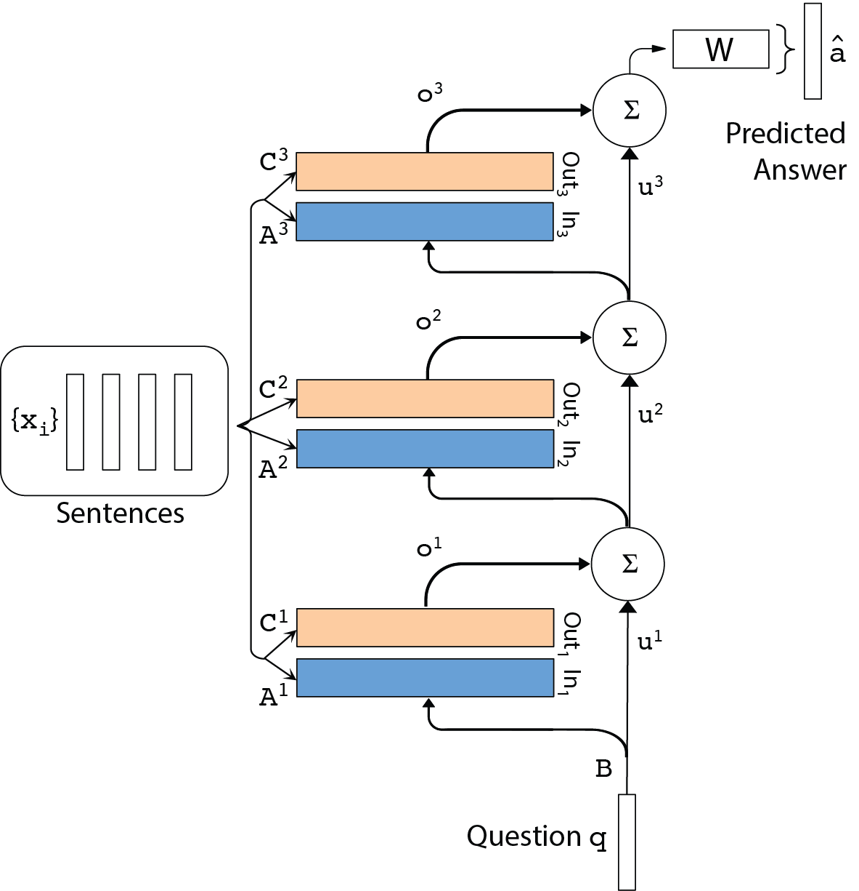

声明: 本文由DataScience 原创发表, 转载请注明本文链接 mlln.cn, 并在文后留言转载.
本文代码运行环境:
windows10
python3.6
jupyter notebook
tensorflow 1.x
概述 我们将实现端到端记忆网络(Memory networks), 这个网络的论文在这里 。我们将使用Dom Lun的一些辅助函数 , 看一下这些函数有助于你对我这篇文章的理解。我们这篇文章专注于实现最简单的记忆网络。在这个过程中，我们将学习如何操纵记忆以获得输出。我们将使用Tensorflow 1.x代码，并偶尔使用Hafner博客的代码。这个博客的最终代码在这里 。
我们遵循论文中的任务: 给你一个故事, 你需要找到最终的问题的答案。



论文的的最终目的是找到一种神经网络算法能够根据故事和问题, 找到问题的答案, 在这篇论文中, 答案就是一个单词
什么是记忆网络? 传统上，循环神经网络及其变体（LSTM，GRU）在句子标注和其他自然语言处理任务中非常成功。但是在推理任务方面失败了，他们必须以某种方式记住项目，因为他们缺少“记忆”组件。因此，记忆网络(MN)为这些任务提供了显式记忆，以克服对长期依赖性的限制。他们还使用soft attention来进一步模拟这些记忆的读写。首先，我们将这个特定的记忆网络缩写为MemN2N。这个网络的原始版本是使用matlab实现的, 并且只有1 hop。

图1
我们将专注于在没有时间编码的情况下复制论文中的bAbI任务。这留给读者练习。现在让我们看一般的MemN2N并逐个编写代码。
拆解记忆网络(MemN2N) 与早期的记忆网络中使用的硬注意力相反，MemN2N使用软注意来选择记忆。这是使用简单的softmax函数完成的。
输入 (仔细观察图1你才能理解下面的话)
我们使用不同的嵌入矩阵向量化所有句子（$x_i$），问题（$q$）和答案（$a$）。因此，我们保留了我们在数据集中看到的所有单词的字典$ V $。字典可以将每个单词都映射到一个索引(数字)。输入包括嵌入矩阵C，A和B.其中C和A分别映射到记忆向量（$m_i$）和输出向量（$c_i$
1 2 3 4 5 6 7 8 9 10 11 12 13 14 15 16 17 18 19 20 21 22 23 24 25 26 27 28 29 30 31 32 33 def _create_placeholders (self) : self._lr = tf.placeholder(tf.float32, [], name="learning_rate" ) self._stories = tf.placeholder(tf.int32, [None , self._memory_size, self._sentence_size], name="stories" ) self._queries = tf.placeholder(tf.int32, [None , self._sentence_size], name="queries" ) self._answers = tf.placeholder(tf.int32, [None , self._vocab_size], name="answers" ) nil_word = tf.zeros([1 , self._embedding_size]) A_placeholder = tf.concat(axis=0 , values= [nil_word, self._normal_init([self._vocab_size-1 , self._embedding_size])]) C_placeholder = tf.concat(axis=0 , values= [nil_word, self._normal_init([self._vocab_size-1 , self._embedding_size])]) with tf.variable_scope("memn2n" ): self.A_1 = tf.Variable(A_placeholder, name="A" ) self.C = [] for hop_number in range(self._hops): with tf.variable_scope("hop_number{}" .format(hop_number)): self.C.append(tf.Variable(C_placeholder, name="C" ))
默认情况下，我们将hop数保持为k = 3，如论文中所报告的，这样可以有良好的结果, 并且每个hop共享权重。这就是论文的图示:

图 2
记忆(Memory) 在我们继续编写词嵌入部分之前，在论文的第4.1节描述了位置编码算法，以便让句子向量中保存词序信息。如果你不懂位置编码这个算法, 可以看我之前写过的文章: 作文自动评分-位置编码position-encoding(PE)解释 。保持最后一个单词独立，因为它表示句子的结束。 作者用Matlab代码定义了这个函数，我们将它转换为python函数。
1 2 3 4 5 6 7 8 9 def position_encoder (embedding_size, sentence_size) : encoding = np.ones((embedding_size, sentence_size), dtype=np.float32) for k in range(1 , embedding_size+1 ): for j in range(1 , sentence_size+1 ): encoding[k-1 , j-1 ] = (1 - j/sentence_size) - (k/embedding_size) * (1 - 2 * j/sentence_size) encoding[:, -1 ] = 1.0 return np.transpose(encoding)
我们现在可以添加词索引到词向量再到句子向量转换的代码，tensorflow提供了从句子(词索引的序列)到其向量表示的转换功能。由于这是构建实际网络的部分，因此我们创建了一个新的_inference函数。在这里，我们制作$B$矩阵，它使用与$A$矩阵相同的矩阵来查找单词。因此，同一组权重用于问题和句子。回到图1，我们看到经过$B$给出了结果向量$u$
1 2 3 4 5 6 7 8 9 10 def _inference (self) : with tf.variable_scope("memn2n" ): B = tf.nn.embedding_lookup(self.A_1, self._queries) u_1 = tf.reduce_sum(B * self._encoding, 1 ) u = [u_1]
现在要获得$p_i$，我们必须得到$m_i$并在softmax操作中使用它。它是记忆$m_i$
让我们从其对应的查找中获取mi。我们在每一跳都这样做，这就是第一跳的样子，
(下面的代码紧接上面)
1 2 3 4 5 6 7 8 9 10 11 12 13 14 15 16 17 18 19 20 21 22 23 24 for hop_number in range(self._hops): if hop_number == 0 : A_lookup = tf.nn.embedding_lookup(self.A_1, self._stories) m_A = tf.reduce_sum(A_lookup * self._encoding, 1 ) else : with tf.variable_scope("hop_number{}" .format(hop_number-1 )): A_lookup = tf.nn.embedding_lookup(self.C[hop_number-1 ], self._stories) m_A = tf.reduce_sum(A_lookup * self._encoding, 1 ) u_temp = tf.transpose(tf.expand_dims(u[-1 ], -1 ), [0 , 2 , 1 ]) dot = tf.reduce_sum(m_A * u_temp, 2 ) print(dot.get_shape()) prob = tf.nn.softmax(dot) P = tf.transpose(tf.expand_dims(prob, -1 ), [0 , 2 , 1 ]) with tf.variable_scope("hop_number{}" .format(hop_number)): C_lookup = tf.nn.embedding_lookup(self.C[hop_number], self._stories) m_C = tf.reduce_sum(C_lookup * self._encoding, 1 )
输出 计算得到$P$
1 2 3 4 5 6 m_C_temp = tf.transpose(m_C, [0 , 2 , 1 ]) o_k = tf.reduce_sum(m_C_temp * P, 2 ) u_k = u[-1 ] + o_k u.append(u_k)
得到答案 答案$\hat a$的计算公式是:
$$
\hat{a} = Softmax(W(o + u)) \tag{3}
$$
1 2 3 4 with tf.variable_scope("hop_number{}" .format(hop_number)): self._logits = tf.matmul(u_k, tf.transpose(self.C[-1 ], [1 ,0 ])) self._scores = tf.nn.softmax(self._logits)
小结 文章到此就是完成了一个端到端的记忆网络, 但是这里还没有介绍如何训练这个网络以及一些可视化的方法。我们统一放在下一篇介绍, 链接:
注意 notebook 第一部分.ipynb)